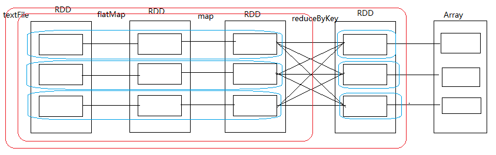
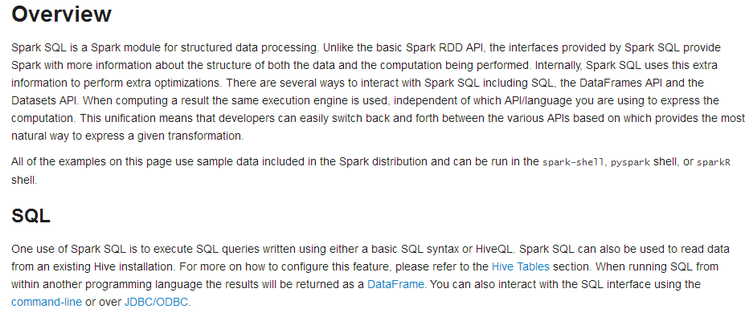
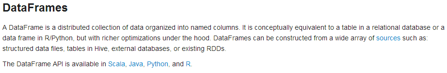

1、Spark集群启动和任务提交流程 2、DAG生成
1、Spark任务管理器 2、设置检查点（checkpoint） 3、jdbcRDD的使用 4、自定义排序 5、Accumulator累加器 6、SparkSQL概述 7、SparkSQL操作 8、编程方式执行SparkSQL查询 9、Spark Shell获取MySQL数据 10、编程方式将数据写入MySQL并打包上传任务到集群 11、Hive On Spark
1、熟悉jdbcRDD的使用方式 2、掌握自定义排序 3、熟悉Accumulator 4、掌握SparkSQL开发流程 5、掌握Hive On Spark配置方法
Task的生成之前必须要stage划分，在stage中会生成若干个pipeline， stage划分的依据是是否发生了shuffle，然后根据pipeline和stage生成一个个task

shuffle read：在发生shuffle之前下游RDD读取上游RDD的数据的过程 shuffle write：在发生shuffle之后把读取到上游的结果数据写到磁盘的过程
为什么要保存到磁盘？
1、避免占用内存太大而资源耗损 2、避免因占用内存太大发生内存溢出（oom） 3、保存到磁盘可以保证数据的安全性
在shuffle过程中，主要是ShuffleManager这个对象在操作
为什么要checkpoint？
在任务运行的时候，有些中间结果数据很重要，为了保证数据的安全性，需要把数据做检查点， 检查点可以存到本地或HDFS（推荐，便于每个节点的Executor来读取） 在checkpoint之前最好先cache一下，这样便于运行任务时调用，也便于在checkpoint时直接从缓存里获取
什么情况下需要做checkpoint？一般是在发生shuffle之后 checkpoint的主要目的就是为了：容灾
步骤：
1、设置检查点目录：sc.setCheckpointDir("hdfs://node01:9000/cp20180303-1")
2、把中间结果数据缓存起来：rdd1.cache
3、把结果数据checkpoint到HDFS相应目录下：rdd1.checkpoint该RDD的功能就是读取JDBC中的数据并转换成RDD
xobject JdbcRDD { def main(args: Array[String]): Unit = { val conf = new SparkConf().setAppName("JdbcRDD").setMaster("local") val sc = new SparkContext(conf) val jdbcUrl = "jdbc:mysql://192.168.88.83:3306/bigdata?useUnicode=true&characterEncoding=utf8" val user = "root" val password = "root" val conn = () => { Class.forName("com.mysql.jdbc.Driver").newInstance() DriverManager.getConnection(jdbcUrl, user, password) } val sql = "select id, location, counts, access_date from location_info" + " where id >= ? and id <= ?" val jdbcRDD: JdbcRDD[(Int, String, Int, Date)] = new JdbcRDD( sc, conn, sql, 0, 1000, 3, res => { val id = res.getInt("id") val location = res.getString("location") val counts = res.getInt("counts") val access_date = res.getDate("access_date") (id, location, counts, access_date) } ) println(jdbcRDD.collect().toBuffer) sc.stop() }}在处理自定义类中的某一个或几个字段进行排序的时候，sortBy或sortByKey算子就无法满足我们的需求，此时可以用Spark提供的自定义排序
xxxxxxxxxx//object MySort{// implicit val girlOrdering = new Ordering[Girl]{// override def compare(x: Girl, y: Girl): Int = {// if (x.fv != y.fv){// x.fv - y.fv// }else{// y.age - x.age// }// }// }//}object CustomSort { def main(args: Array[String]): Unit = { val conf = new SparkConf().setAppName("CustomSort").setMaster("local") val sc = new SparkContext(conf) val girlInfo = sc.parallelize(Array(("xiaofang", 90, 24), ("yaoyao", 90, 25), ("yingtai", 100, 26))) // 第一种排序方式// import MySort.girlOrdering// val res: RDD[(String, Int, Int)] = girlInfo.sortBy(x => Girl(x._2, x._3), false) // 第二种排序方式 val res = girlInfo.sortBy(x => Girl(x._2, x._3), false) println(res.collect().toBuffer) sc.stop() }}// 第一种排序方式//case class Girl(fv: Int, age: Int)// 第二种排序方式case class Girl(fv: Int, age: Int) extends Ordered[Girl]{ override def compare(that: Girl): Int = { if (this.fv != that.fv){ this.fv - that.fv }else{ that.age - this.age } }}Spark提供了Accumulator累加器，用于多个节点对一个变量进行共享操作 其实就是提供了多个task对一个变量并行的操作的过程 task只能对Accumulator做累加的操作，不能读取其值，只有Driver可以读取其值
xxxxxxxxxxobject AccumulatorDemo { def main(args: Array[String]): Unit = { val conf = new SparkConf().setAppName("AccumulatorDemo").setMaster("local") val sc = new SparkContext(conf) val sum: Accumulator[Int] = sc.accumulator(0) val numbers: RDD[Int] = sc.parallelize(Array(1,2,3,4,5,6), 3) numbers.foreach(num => sum += num) println(sum) sc.stop() }}Spark 1.0版本开始，推出了Spark SQL。 其实最早使用的，都是Hadoop自己的Hive查询引擎；但是后来Spark提供了Shark； 再后来Shark被淘汰，推出了Spark SQL。 Shark的性能比Hive就要高出一个数量级，而Spark SQL的性能又比Shark高出一个数量级。
Spark SQL的特点 1、支持多种数据源：Hive、RDD、Parquet、JSON、JDBC等。 2、多种性能优化技术：in-memory columnar storage、byte-code generation、cost model动态评估等。 3、组件扩展性：对于SQL的语法解析器、分析器以及优化器，用户都可以自己重新开发，并且动态扩展。
Spark SQL的性能优化技术简介: 1、内存列存储（in-memory columnar storage） 内存列存储意味着，Spark SQL的数据，不是使用Java对象的方式来进行存储， 而是使用面向列的内存存储的方式来进行存储。 也就是说，每一列，作为一个数据存储的单位。从而大大优化了内存使用的效率。 采用了内存列存储之后，减少了对内存的消耗，也就避免了gc大量数据的性能开销。 2、字节码生成技术（byte-code generation） Spark SQL在其catalyst模块的expressions中增加了codegen模块，对于SQL语句中的计算表达式， 比如select num + num from t这种的sql，就可以使用动态字节码生成技术来优化其性能。 3、Scala代码编写的优化 对于Scala代码编写中，可能会造成较大性能开销的地方，自己重写，使用更加复杂的方式，来获取更好的性能。 比如Option样例类、for循环、map/filter/foreach等高阶函数， 以及不可变对象，都改成了用null、while循环等来实现，并且重用可变的对象。

在Spark中，DataFrame是一种以RDD为基础的分布式数据集，类似于传统数据库中的二维表格。 DataFrame与RDD的主要区别在于，前者带有schema元信息， 即DataFrame所表示的二维表数据集的每一列都带有名称和类型。这使得Spark SQL得以洞察更多的结构信息， 从而对于DataFrame背后的数据源以及作用于DataFrame之上的变换进行了针对性的优化， 最终达到大幅提升运行时效率的目标。反观RDD，由于无从得知所存数据元素的具体内部结构， Spark Core只能在stage层面进行简单、通用的流水线优化

在Spark SQL中SQLContext是创建DataFrames和执行SQL的入口，在spark-1.6.3中已经内置了一个sqlContext
1、在本地创建一个文件，有三列，分别是id、name、age，用空格分隔，然后上传到hdfs上
xxxxxxxxxxhdfs dfs -put person.txt2、在spark shell执行下面命令，读取数据，将每一行的数据使用列分隔符分割
val lineRDD =sc.textFile("hdfs://node01:9000/person.txt").map(_.split(""))3、定义case class（相当于表的schema）
case classPerson(id:Int, name:String, age:Int)
4、将RDD和case class关联
val personRDD =lineRDD.map(x => Person(x(0).toInt, x(1), x(2).toInt))
5、将RDD转换成DataFrame
val personDF =personRDD.toDF
6、对DataFrame进行处理
personDF.show
查看DataFrame中的内容
personDF.show
查看DataFrame部分列中的内容
personDF.select(personDF.col("name")).show
personDF.select(col("name"),col("age")).show
personDF.select("name").show打印DataFrame的Schema信息
personDF.printSchema
查询所有的name和age，并将age+1
personDF.select(col("id"),col("name"), col("age") + 1).show
personDF.select(personDF("id"),personDF("name"), personDF("age") + 1).show 过滤age大于等于18的
personDF.filter(col("age")>= 18).show按年龄进行分组并统计相同年龄的人数
personDF.groupBy("age").count().show()如果想使用SQL风格的语法，需要将DataFrame注册成表
personDF.registerTempTable("t_person")查询年龄最大的前两名
sqlContext.sql("select* from t_person order by age desc limit 2").show显示表的Schema信息
sqlContext.sql("desct_person").show xxxxxxxxxx/** * 通过反射推断Schema */object InferSchema { def main(args: Array[String]): Unit = { val conf = new SparkConf().setAppName("InferSchema").setMaster("local") val sc = new SparkContext(conf) val sqlContext: SQLContext = new SQLContext(sc) // 获取数据 val linesRDD: RDD[Array[String]] = sc.textFile("hdfs://node01:9000/person.txt").map(_.split(",")) // 将linesRDD和Person关联 val personRDD: RDD[Person] = linesRDD.map(p => Person(p(0).toInt, p(1), p(2).toInt, p(3).toInt)) // 调用toDF方法需要引入隐式转换函数 import sqlContext.implicits._ // 将personRDD转换成DataFrame val personDF: DataFrame = personRDD.toDF // 注册成一张临时表 personDF.registerTempTable("t_person") val sql = "select * from t_person where age > 18 order by fv asc limit 10" // 调用sqlContext实例的sql方法进行查询 val res: DataFrame = sqlContext.sql(sql) println(res.collect().toBuffer) // 把结果数据存到HDFS res.write.mode("append").json("hdfs://node01:9000/out20180303-1") sc.stop() }}case class Person(id: Int, name: String, age: Int, fv: Int) xxxxxxxxxx/** * 通过StructType直接指定Schema */object StructTypeSchemaDemo { def main(args: Array[String]): Unit = { val conf = new SparkConf().setAppName("StructTypeSchemaDemo").setMaster("local") val sc = new SparkContext(conf) val sqlContext: SQLContext = new SQLContext(sc) // 获取数据 val linesRDD = sc.textFile("hdfs://node01:9000/person.txt").map(_.split(",")) // 由StructType类型指定Schema val schema: StructType = StructType { Array( StructField("id", IntegerType, false), StructField("name", StringType, true), StructField("age", IntegerType, true), StructField("fv", IntegerType, true) ) } // 把linesRDD映射到rowRDD val rowRDD: RDD[Row] = linesRDD.map(p => Row(p(0).toInt, p(1), p(2).toInt, p(3).toInt)) // 转换成DataFrame val personDF: DataFrame = sqlContext.createDataFrame(rowRDD, schema) // 注册二维表 personDF.registerTempTable("t_person") val sql = "select * from t_person" val res = sqlContext.sql(sql) res.write.mode("append").json("c://person") sc.stop() }}1、启动Spark Shell，必须指定mysql连接驱动jar包
xxxxxxxxxx/usr/local/spark-1.6.1-bin-hadoop2.6/bin/spark-shell\--master spark://node01:7077\--jars/usr/local/spark-1.6.1-bin-hadoop2.6/mysql-connector-java-5.1.35-bin.jar \--driver-class-path/usr/local/spark-1.6.1-bin-hadoop2.6/mysql-connector-java-5.1.35-bin.jar 2、从mysql中加载数据
xxxxxxxxxxval jdbcDF =sqlContext.read.format("jdbc") .options(Map("url" ->"jdbc:mysql://node03:3306/bigdata", "driver" ->"com.mysql.jdbc.Driver", "dbtable" ->"person", "user" -> "root","password" -> "root")) .load()3、执行查询
xxxxxxxxxxjdbcDF.show() xxxxxxxxxxobject InsertData2MySQL { def main(args: Array[String]): Unit = { val conf = new SparkConf().setAppName("InsertData2MySQL").setMaster("local") val sc = new SparkContext(conf) val sqlContext = new SQLContext(sc) // 获取数据 val linesRDD = sc.textFile("hdfs://node01:9000/test.txt").map(_.split(",")) // 指定schema信息 val schema = StructType{ Array( StructField("name", StringType, true), StructField("age", IntegerType, true)) } // linesRDD映射到Row val personRDD = linesRDD.map(p => Row(p(0), p(1).toInt)) // 转换成DataFrame val personDF = sqlContext.createDataFrame(personRDD, schema) // 封装请求MySQL的配置信息 val prop = new Properties() prop.put("user", "root") prop.put("password", "root") prop.put("driver", "com.mysql.jdbc.Driver") // 把数据写入MySQL personDF.write.mode("append").jdbc("jdbc:mysql://node03:3306/bigdata", "person", prop) sc.stop() }}众所周知，Hive的底层执行引擎是用MapReduce来进行分析的，但这种执行方式的速度比较慢。Hive On Spark就是把执行引擎换成Spark Core来进行计算，这样会大大提高运行速度。
hive-on-spark配置和使用方法：
配置： 1、将Hadoop/etc/hadoop/里面的core-site.xml和Hive/conf里的hive-site.xml复制到Spark/conf里 2、注意：如果你的mysql数据库装在windows，需要设置字符集为latin1
启动：
$SPARK/bin/spark-sql \ --master spark://node01:7077 \ --executor-memory 512m \ --total-executor-cores 2 \ --driver-class-path /export/software/mysql-connector-java-5.1.35-bin.jar
操作： 创建表：
create table person(id int, name string, age int, fv int) row format delimited fields terminated by ',';
load数据：
load data local inpath "/root/person.txt" into table person;
查询：
select * from person;
删除表：
drop table person;
1、自定义排序 2、SparkSQL的知识点
1、SparkSQL开发流程
1、SparkCore和SparkSQL开发的区别 2、为什么要用Hive On Spark